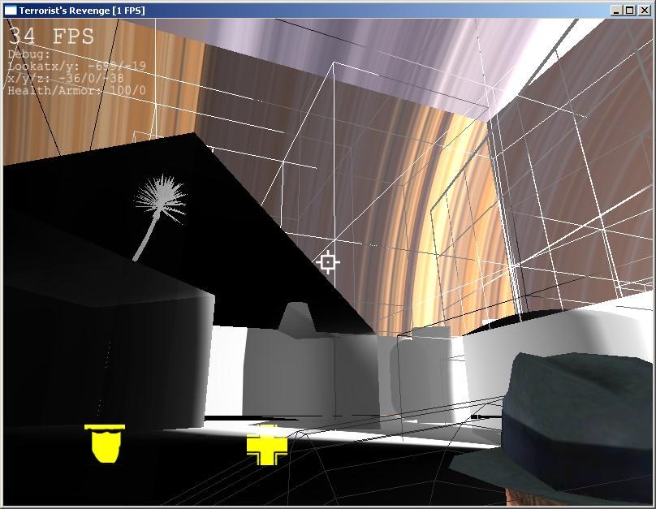

Shader, Netzwerk & Kollisionen
written on Tuesday, May 8, 2007
Note
This is about a game I once wrote, which was part of my high school thesis. Unfortunately, it's written in German.
Da ich wie immer zu faul war, hier was zu posten, gibts nun mal wieder ein grösseres Update. Ich erfülle so langsam alles, was es auch braucht für das Spiel.
Angefangen hat es mit den Kollisionen. Diese sind schon sehr weit fortgeschritten (Dank geht u.a. an meinen Vater, der mir sehr geholfen hat) und auch gut optimiert. Da will ich als nächstes die Gravity und das Treppenlaufen ermitteln. Bilder dazu gibts leider keine, wäre ja nicht spannend ;) Die Technik die ich verwende für die Kollisionen, ist relativ kompliziert. Zuerst prüfe ich, ob die Spielfigur auch in einem gewissen Teil des Octrees ist, dann wird geschaut ob die Fläche mit der Bounding Sphere der Figur (Eine virtuelle Kugel, die die Figur approximiert) schneidet. Anschliessend wird dann mit einer komplizierten, aber sehr sehr schnellen Methode überprüft ob das Dreieck den Kreis schneidet, den es durch die Kollision mit der Fläche ergab.
Daneben habe ich auch noch eine Prozedur geschrieben um eine Kollision eines Schusses und einer Boundingsphere zu ermöglichen. Dazu habe ich dann auch eine neue Charakter Unit geschrieben, wo alles mit Charakteren abläuft - Waffen, Schüsse, Modelle usw.
Das nächste was ich bearbeitet habe, ist das Netzwerk. Dieses ist mittlerweile auch schon sehr gut fortgeschritten und in einem akzeptablen Zustand, allerdings müsste ich das ganze dringend mal testen, da ich aber nicht wirklich einen zweiten PC habe und unser zweiter PC sich nur sehr schlecht eignet dafür, muss ich da mal auf eine geeignete Gelegenheit warten. Beim Netwerk arbeite ich übrigens mit einem kombinierten Protokoll aus UDP/TCP, UDP verwende ich für die grossen Datenmengen und TCP für Dinge die unbedingt ankommen müssen.
Mittlerweile habe ich es auch geschafft, mich in die Shader einzulesen (GLSL). Das ganze ist sehr spannend, doch auch hochkompliziert. So habe ich mittlerweile Shader implementiert und kann diese nun mit ATI Rendermonkey oder einem anderen Editor schreiben.
Das ist auch schon das einzige Bild was ich für dieses Mal habe:
Das ist ein kleines Beispiel, was man mit Shadern so alles falsch machen kann. Dies sollte eigentlich ein Comic Shader sein, aber irgendwie verhält er sich ein bisschen anders ;)
Thank you for reading! You can follow me on github or on twitter. If you like my OS projects, you could consider a donation on gittip.
blog comments powered by Disqus